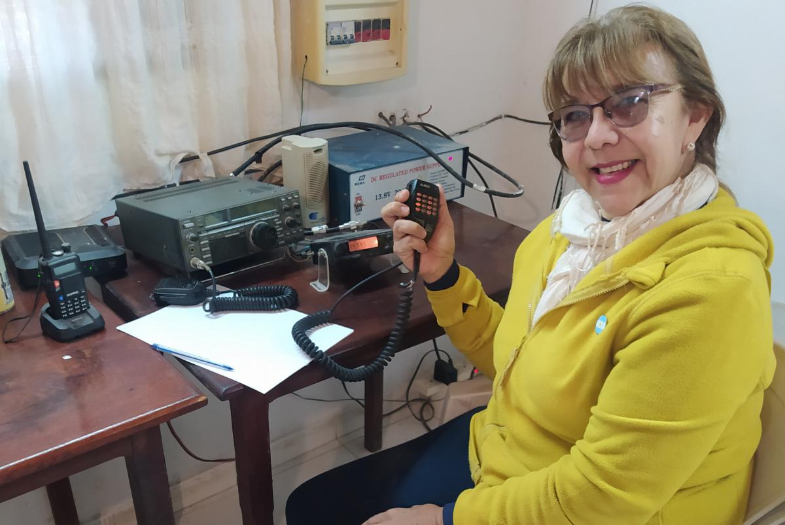

-

La Dra. Dorys Beterette ejerce la odontología en el Hospital de Pozo del Tigre, provincia de Formosa, además, desde hace más de treinta y cinco años es miembro activo del Círculo Odontológico de Formosa (COF) y coordinadora Regional del NEA de la Comisión Nacional de Prevención (CNP) de la CORA. Más allá de sus ocupaciones profesionales, reserva tiempo a uno de sus pasatiempos más importantes: la radioafición; una actividad dedicada a la investigación, desarrollo y difusión de las comunicaciones a través de equipos de radiofrecuencia, realizada por personas y radioclubes legalmente habilitados por el Ente Nacional de Comunicaciones de la República Argentina (ENACOM). Con respecto a cómo nace su interés en la actividad, Dorys explica que fue una suma de hechos concomitantes: “El más importante fue, tal vez, vivir en un pueblo del interior con las dificultades e impedimentos que entonces existían para las comunicaciones. A ello se le agregó la coincidencia de que el Padre Francisco Schmelar, por entonces sacerdote de mi pueblo, era radioaficionado y fue quien nos brindó detalles de la actividad a mi prima y a mí. Finalmente, me atrajo que la radioafición es una actividad estrechamente ligada a la acción social, sobre todo en situaciones de emergencias o necesidades extremas. Desde hace muchos años formo parte del Radio Club de mi provincia”, explica.
Radiodifusión vs. radioafición
La Dra. Beterette aclara que es muy común confundir la radiodifusión y la radioafición (ver recuadro) por la similitud de los términos. “Sin embargo, la primera se limita -como su nombre lo indica- a la difusión de contenidos a través de la radio como medio de comunicación, pero en un solo sentido. En cambio, la radioafición se desarrolla bilateralmente: hay un emisor y un corresponsal que interactúan”. Es allí cuando nuestra actividad se convierte en una cuestión crítica, dada su característica de autonomía: no necesita de otra cosa más que de los equipos (transmisor/receptor), fuentes de alimentación (baterías y/o paneles solares) y sistemas irradiantes (antenas) adecuados para llevarse a cabo, muchos son portátiles y la gran mayoría de nosotros los posee. La cobertura es ilimitada, ya que se puede llegar con los comunicados a cualquier lugar del planeta”, agrega la odontóloga.
Una actividad regulada
En nuestro país solo existen 35.000 radioaficionados aproximadamente mientras países como Japón cuentan con 2.000.000 y Estados Unidos con 600.000. Para desarrollar la actividad de manera legal es requisito inexorable la realización de un curso en un radioclub o entidad reconocida y habilitada por el ENACOM. Luego de aprobar tres exámenes obligatorios sobre técnica, reglamentación y telegrafía, se accede a la licencia oficial que habilita para desenvolverse en las modalidades que la radio ofrece, entre otras: satélite, transmisión de datos por paquetes (considerada el origen de la internet) y telegrafía. La actividad se rige por protocolos internacionales establecidos por la International Amateur Radio League, que es el organismo rector internacional y al cual suscribe la Argentina. A partir de la creación del Sistema Nacional de Emergencias, a través de la Ley N°28287, se establece que cada radioaficionado es un auxiliar de las Fuerzas Armadas y de Seguridad de la Nación. “Por este motivo, el Estado Nacional puede requerir el apoyo de cada radioaficionado ante una situación de emergencia”, detalla Beterette.
¿Qué es la radiodifusión?
Consiste en establecer comunicaciones frecuentes entre radioaficionados, realizar concursos, hacer expediciones a lugares alejados de los centros urbanos y, fundamentalmente, efectuar ejercicios de entrenamiento y simulacros de situaciones de emergencia, durante los cuales las comunicaciones se pueden interrumpir, como puede ocurrir en inundaciones, terremotos, grandes tormentas y similares.
Tender puentes solidarios
La actividad de los radioaficionados es de naturaleza solidaria. Dorys Beterette lo entiende así y elige para compartir una experiencia que la marcó: “Cuando falleció el pequeño hijo de un compañero de trabajo no había manera de comunicarles la noticia a los abuelos del chiquito, residentes en la provincia de Córdoba. Ante la dolorosa posibilidad de que no pudieran asistir a despedirse, comencé una serie de llamados por radio que a su vez fueron estableciendo puentes con otros radioaficionados hasta que logramos ubicarlos, pero el último micro de ese día hacia Formosa ya había partido. Entonces, uno de los radioaficionados logró comunicarse con el puesto de peaje más próximo, allí pusieron en aviso al chofer del micro, quien decidió esperarlos. Otro radioaficionado los llevó con su auto hasta el lugar donde, finalmente, pudieron abordar el transporte. De esa manera, los abuelos pudieron llegar a tiempo para dar el último adiós a su nietito. Hechos como ese hacen que ser radioaficionado valga la pena”, cuenta emocionada.